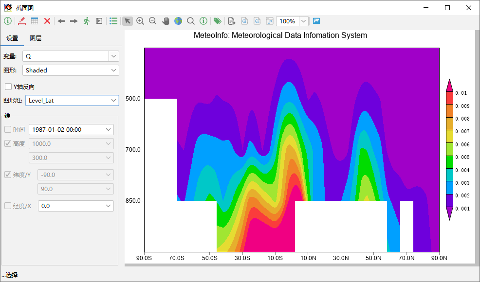
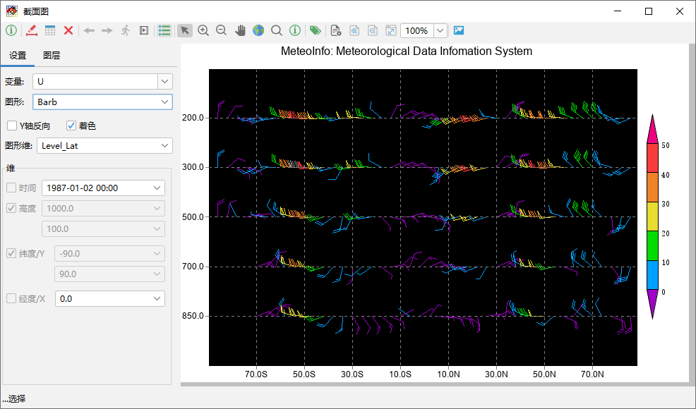

绘制截面图¶
气象数据具有多维属性，上面介绍的从气象数据生成GIS图层只能展现地理空间上的二维特征，截面图功能可以展现数据其他组合的二维特征， 包括：高度-经度维（Level_Lon）、高度-纬度维（Level_Lat）、时间-经度维（Time_Lon）、时间-纬度维（Time_Lat）和高度-时间 维（Level-Time）。这里以“MeteoInfo -> sample -> GrADS”目录中的model.ctl文件为例，在气象数据对话框中打开该数据文件， 点击工具栏中“截面图”按钮打开截面图绘制界面，里面的工具栏里的工具按钮和气象数据对话框以及MeteoInfoMap主界面工具栏里对应的工具 按钮功能类似。选择数据中的一个变量，设置欲绘制的图形类型，然后设置“图形维”。例如设置变量为Q，图形为Shaded，图形维为Level_Lat， 此时高度和纬度维全取，而时间和经度维需要固定。
数据中有风场U/V分量或风向/风速变量也可以绘制截面风场图。
